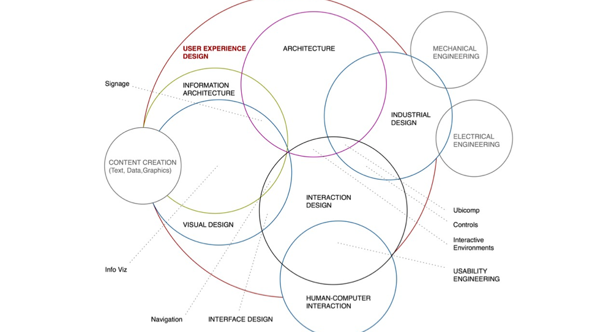
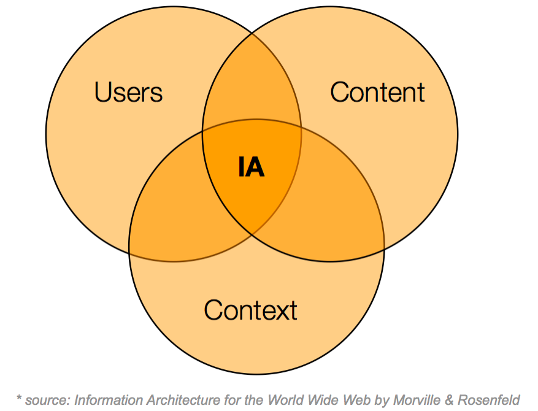

Take a moment to think about the best user experiences you have had, and the worst. When where you delighted during a digital experience? When were you infuriated or annoyed? Think outside of your computer screens and mobile devices too.

We’re at the intersection of Information Architecture (IA), Interaction Design (IxD), and Visual Design. IA is concerned with the structure of content: how to best organize and label content so that users find the information they need. Visual design is about creating a visual language to communicate content: fonts, colours, layouts of user interfaces. Interaction Design is about creating and facilitating transactions between two entities - this usually means websites or apps in our world. UX seeks influence from other disciplines and experts such as: Don Norman (UX), Edward Tufte (Information Design), Mies Van der Rohe (Architecture), Charles and Ray Eames (Industrial Design).
Let's move past trying to define it more formally. Let's look at the key components of good user experience. Good UX should be:
Bad UX then must fail one or more of those criteria.
People seek one or more of the following:
Companies should aspire to build good UX. There are plenty of good reason. In the marketplace:
Good UX in the workplace can do the following:
And all of this leads to a greater chance of profit.
Sounds easy, right? Just make user experiences that are useful, usable, and pleasant. But I often find myself answering UX questions with "It depends". I often use the diagram below to show the dimensions that each UX decision depends on.

It depends on what tasks the user is trying to accomplish. It depends on the user's information seeking behaviour - are they searchers or are they browsers? It depends on the user demographics (young/old, poor/rich, male/female).
It depends on the types of data or documents you must use. Are you dealing with text, video, audio, images, or all of the above? It depends on the volume of content. Designing for 5 words is drastically different than designing for 5 paragraphs. Choosing a design to display 3 images will be different than one you'd choose to show 1000 images. It depends on existing content structures. Does your client already have a website that you must convert to a new design? Do they have a pile of marketing brochures that you're responsible for converting to a website?
It depends on your client's business goals. Is your client trying to inspire a purchase or donation or just raise awareness? It depends on how much funding your project has. A small budget forces you to make different, and possibly more creative design decisions. It depends on politics. If the IT manager is a key stakeholder in your website and is very vocal, then you might have to put more effort and compromise your designs for the sake of security and stability. It depends on the culture of your company or the client's. If your client comes from a risk-averse culture, then your 'edgy' designs might not make it past the first cut. It depends on the technology available to you. You might have incredible ideas for user interactions of your application, but if you don't have developers with the chops to build it, then you will have to compromise. It depends on constraints like time, and money.